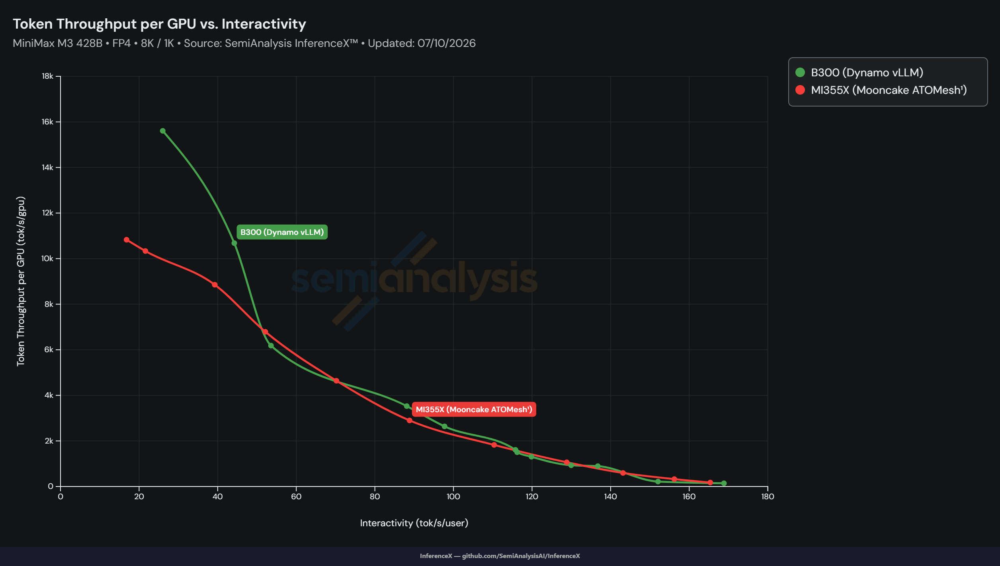

在AMD Instinct™ MI355X GPU上，使用ATOM、AITER和ATOMesh对MiniMax-M3推理进行了一组优化。更广泛的背景（所用推理引擎与分布式服务层）请参阅ROCm博客中的ATOM和ATOMesh相关文章。
我们将分项说明：
量化、注意力、KV缓存、推测解码与分离推理中的系统级瓶颈。
ATOM在线量化用于加速attention GEMM。
AITER sparse attention、FP8 KV cache和page-16 SHUFFLE布局。
EAGLE3 speculative decoding，用于减少target-model前向计算。
ATOMesh P/D disaggregation，用于分布式MiniMax-M3 serving。
最终，你将理解这些优化如何协同工作，提升serving throughput、降低token latency，并在MiniMax-M3 workloads上保持准确率。
MiniMax-M3是一款高性能大语言模型，推理路径复杂。它结合了混合专家（MoE）、稀疏注意力、长上下文KV缓存管理和量化检查点。仅优化一个内核是不够的。要在AMD Instinct™ MI355X GPU上实现更高的服务效率，必须考虑完整的推理路径。
MiniMax-M3优化工作近期聚焦于四大领域：
量化
针对注意力线性层和GEMM加速的在线量化
注意力运行时
AITER稀疏注意力、FP8 KV cache和page-16 SHUFFLE KV布局
投机解码
EAGLE3推测解码，优化草稿与目标执行
分离式推理
ATOMesh P/D分离与MiniMax-M3稀疏索引器-键缓存传输
这些改动共同改善了最重要的服务瓶颈：注意力GEMM开销、KV缓存带宽、稀疏注意力调度和目标模型前向频率。
ATOM提供多种在线量化方法，可在不重新生成完整模型的情况下，为高效的GEMM执行准备检查点权重。这些方法包括将BF16权重量化为FP8或FP4，以及在同一数据类型内进行格式转换，例如从FP8块缩放权重转换为FP8 PTPC权重。这对于MiniMax-M3量化检查点尤为有用，因为性能敏感路径（尤其是注意力）可以使用更低比特的GEMM，或在切换到不同量化方案（如PTPC）时保持FP8。有关支持的在线量化模式和配置选项的完整列表，请参阅ATOM在线量化指南。
对于MiniMax-M3，ATOM仅在能提升GEMM吞吐的位置应用在线量化：注意力线性层和部分稠密MLP层。lm_head、嵌入层、视觉组件、多模态投影器和MoE层等模块被排除在外，因此MoE权重保持其现有的量化格式。该选择性策略同时覆盖MiniMaxAI/MiniMax-M3-MXFP8和Quark量化模型（如amd/MiniMax-M3-MXFP4），其中部分注意力层保持BF16，仍可受益于PTPC FP8在线量化。实现细节参见ROCm/ATOM #1335和ROCm/ATOM #1370。
以MiniMaxAI/MiniMax-M3-MXFP8为例，选定的注意力GEMM权重从其1x32块缩放checkpoint表示加载，并在模型加载期间转换为PTPC FP8。该转换使用GPU逐元素内核，因此仅增加少量一次性的权重加载开销。PTPC权重物化后，请求时的推理直接使用它们，无需承担额外的在线量化延迟。图1展示了这一加载时转换路径以及保持原始格式的模块。
图1. MiniMax-M3在线量化路径。
下面是一个在线量化的配置示例：
--online_quant_config '{"global_quant_config": "ptpc_fp8", "exclude_layer": ["lm_head", "model.embed_tokens", "vision_tower", "multi_modal_projector", "patch_merge_mlp", "*block_sparse_moe"]}'第二个优化方向针对注意力运行时。这不是单一的内核改动，而是需要在推理框架ATOM和算子库AITER之间进行联合设计与调优。AITER为prefill和decode提供高性能注意力算子，而ATOM则暴露使用这些算子所需的高效稀疏元数据、KV缓存布局和page-size配置。
MiniMax-M3还具有模型特定的稀疏注意力行为，包括分组查询头（grouped query heads）和按KV头选择的块（per-KV-head block selection）。这些细节决定了稀疏索引器、块表和page-16 KV缓存布局的表示方式。
具体而言，MiniMax-M3具有q_head=64和kv_head=4，可视为4个KV头稀疏注意力组，每组包含q_head=16和kv_head=1。对每个查询token和KV头，索引器选择16个逻辑块，每个逻辑块覆盖128个token。不同的KV头拥有独立的top-k索引器，可以选择不同的KV块。图2展示了这些逻辑块如何映射到AITER paged-attention路径所使用的page-16 SHUFFLE KV缓存布局。
图2. MiniMax-M3 KV缓存布局。
上述布局的具体实现横跨ATOM和AITER：
在ATOM侧，我们将MiniMax-M3稀疏注意力重构为标准Attention和PagedAttentionImpl框架，引入SparseMHAPagedAttentionImpl，并新增了page-16 SHUFFLE KV cache路径，配合AITER gluon paged-attention runner用于解码（decode）和预填充（prefill）。这使得MiniMax-M3在保留模型特定稀疏行为的同时，复用标准注意力元数据绑定，并允许稀疏索引top-k路径直接生成压缩后的稀疏块表，从而避免额外的块表构建启动，减少HBM往返。实现细节见ROCm/ATOM #1334。
在AITER侧，我们为fused_qknorm_idxrqknorm增加了SHUFFLE KV cache布局支持，使用独立的K和V cache张量，并通过asm_layout标志选择page-16 SHUFFLE寻址路径。我们还通过将硬编码的FP8最大值替换为AITER的opus::finfo
我们还为MiniMax-M3增加了EAGLE3推测解码支持。EAGLE3使用轻量级草稿模型提出多个token，然后通过MiniMax-M3目标模型验证这些提议。对于贪心解码，这在保持目标模型输出的同时，减少目标模型平均前向传播次数。
目标模型的注意力解码路径被扩展为支持max_q_len > 1，从而实现多token推测验证。在草稿模型侧，token首先进入非分片嵌入路径，然后依次执行：使用4卡张量并行的注意力、all-reduce、融合RMSNorm/Quant、使用4卡张量并行的MLP、另一次all-reduce，以及N维度在张量并行rank间切分的LM head GEMM。该优化新增了多条融合路径，包括RMSNorm + Quant融合与三重RMSNorm融合。它还引入了分布式贪心argmax，其中每个rank将其M x (N/TP) logits分片规约为逐token的 (max, index) 对。仅这些 [M, 2] 的逐rank结果会被跨张量并行rank进行all-gather，而不是完整的 [M, N] logits，随后执行最终的跨rank argmax。图3总结了这一优化的草稿模型执行路径。实现细节见ROCm/ATOM #1333。
图3. MiniMax-M3 EAGLE3使用融合草稿模型执行和分布式argmax来降低投机解码开销。
使用 --num-speculative-tokens 3，验证的GSM8K运行测得：
指标
值
每次前向平均接受的token数
3.20
整体草稿接受率
73.45%
首个草稿token接受率
85.8%
第二个草稿token接受率
73.7%
第三个草稿token接受率
60.9%
该接受率分布说明了EAGLE3为何能在保持输出一致性的同时减少MiniMax-M3目标模型的计算量。端到端解码吞吐取决于服务配置，包括序列长度、批量大小、并发数、模型格式和软件版本。
ATOMesh支持prefill/decode分离，可在分布式GPU资源上为大模型提供推理服务。这对MiniMax-M3尤其有用：长上下文prefill与稀疏注意力decode存在不同的扩展瓶颈，将两个阶段分离后，部署可为各阶段独立分配资源。
针对MiniMax-M3，我们在ATOMesh中新增了MiniMax-M3专属的缓存传输路径，使P/D分离同时传输标准K/V缓存和各稀疏注意力层维护的稀疏索引器键缓存。这确保解码worker能获得正确选择top-k历史块所需的元数据，因为稀疏索引器键缓存无法在缓存命中后从常规K/V缓存重建。该P/D分离与缓存传输流程见图4。实现细节见ROCm/ATOM #1368。
图4. 基于Mooncake RDMA KV和indexer-key缓存传输的ATOMesh上MiniMax-M3 P/D分离。
在FP4服务模式下，搭载于AMD Instinct™ MI355X GPU上的ATOM MiniMax-M3在所测交互性范围内实现了业界领先的性能。图5、图6和图7展示了不同服务配置下的FP4吞吐曲线。
图5. 搭载ATOM的MI355X上MiniMax-M3 FP4 8K/1K每GPU服务吞吐与已发布的InferenceX测量结果对比。来源：SemiAnalysis、InferenceX，搭载ATOM的MI355X上FP4 8K/1K MiniMax-M3，数据截至2026年7月11日。
图6. 搭载ATOM和M3 EAGLE的MI355X上MiniMax-M3 FP4 8K/1K每GPU服务吞吐与已发布的InferenceX测量结果对比。来源：SemiAnalysis、InferenceX，搭载ATOM和M3 EAGLE的MI355X上FP4 8K/1K MiniMax-M3，数据截至2026年7月11日。
图7. 搭载Mooncake ATOMesh的MI355X上MiniMax-M3 FP4 8K/1K每GPU服务吞吐与已发布的InferenceX测量结果对比。来源：SemiAnalysis、InferenceX，搭载Mooncake ATOMesh的MI355X上FP4 8K/1K MiniMax-M3，数据截至2026年7月11日。
可通过遵循MiniMax-M3 MXFP4/MXFP8使用指南重现这些性能结果，该指南包含启动命令、在线量化配置、EAGLE3设置、精度测试、基准测试脚本，以及请求形状和并发设置等详细服务参数。


在AMD Instinct™ MI355X GPU上优化MiniMax-M3需要的不仅仅是单一内核改进。最佳结果来自协调量化、注意力执行、KV缓存布局、分布式缓存传输和解码策略。
ATOM在线量化加速注意力GEMM，AITER稀疏注意力和FP8 KV缓存减少注意力运行时开销和内存移动，EAGLE3推测解码降低解码期间的有效目标模型工作负载，ATOMesh支持MiniMax-M3缓存传输以实现P/D分离。这些优化共同提供了一条在AMD Instinct™ MI355X GPU上实现更高吞吐MiniMax-M3服务并保持精度的实用路径。
ROCm/ATOM仓库
ROCm/AITER仓库
ATOM：通过软硬件协同优化释放AMD Instinct的极致推理性能
ATOMesh：释放AMD硬件潜力，实现可扩展的LLM（大语言模型）服务
支持MiniMaxAI/MiniMax-M3-MXFP8
Quark模型的在线量化
MiniMax-M3 AITER sparse attention与SHUFFLE KV cache
AITER SHUFFLE KV cache布局
AITER FP8 scaling更新
支持MiniMax-M3 EAGLE3 speculative decoding
MiniMax-M3模型
MiniMax-M3 MXFP4模型
MiniMax-M3 EAGLE3草稿模型
我们感谢AMD Quark团队、AMD ATOM团队和AMD AITER团队的贡献与支持。
本文档中的信息仅供参考，可能包含技术不准确之处、遗漏和笔误。本文所含信息可能随时更改，并可能因多种原因变得不准确，包括但不限于产品和路线图变更、组件和主板版本变更、新型号和/或产品发布、不同制造商之间的产品差异、软件变更、BIOS刷新、固件升级等。任何计算机系统都存在无法完全防止或缓解的安全漏洞风险。AMD不承担更新、更正或修订此信息的义务。但AMD保留随时修订此信息并更改本文内容的权利，且无义务通知任何人此类修订或变更。此信息按“原样”提供。AMD不对本文内容作任何陈述或保证，并不对本文信息中可能出现的任何不准确、错误或遗漏承担责任。AMD明确不承担任何关于不侵权、适销性或特定用途适用性的默示保证。在任何情况下，AMD均不对任何人因使用本文所含任何信息而产生的任何依赖、直接、间接、特殊或其他后果性损害承担责任，即使AMD已明确被告知此类损害的可能性。AMD、AMD箭头徽标及其组合是Advanced Micro Devices, Inc. 的商标。本出版物中使用的其他产品名称仅用于标识目的，可能是其各自公司的商标。© 2026 Advanced Micro Devices, Inc. 保留所有权利
参考：https://rocm.blogs.amd.com/software-tools-optimization/minimax-m3-mi355/README.html